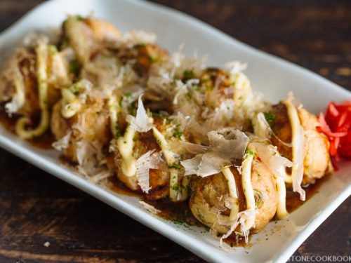

Takoyaki
Takoyaki is a beloved dish in Japan. It consists of bonito flakes with a solid flour base with octopus in the middle,
topped with some a light amount of mayo.
Ingredients
Steps
- Mix the batter
- Cut up the octopus, slice the green onions, have everything ready on the pan to flip the balls
- Oil the pan with a brush
- Whisk the batter, and pour into each individual hole in the pan.
- Add in the fillings
- Use the skewers to flip the takoyaki 90 degrees
- Add in the sauce once every single one is done!
